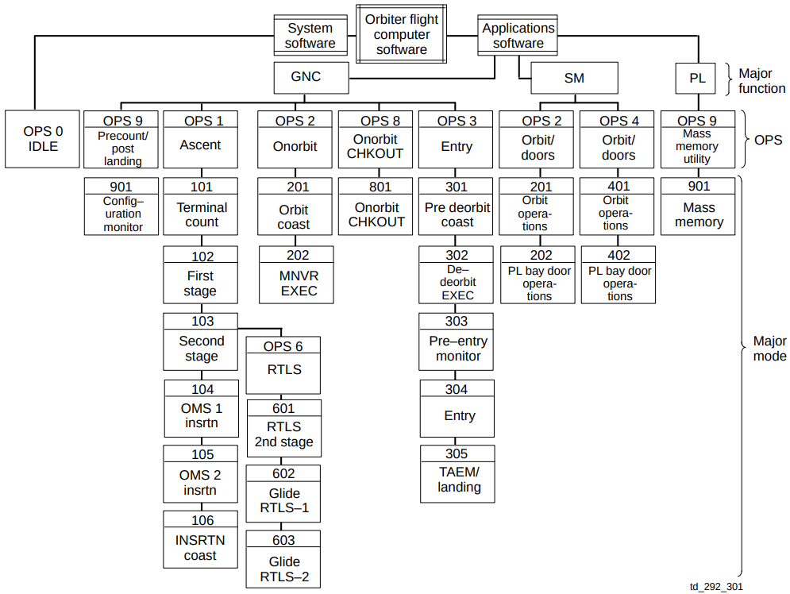
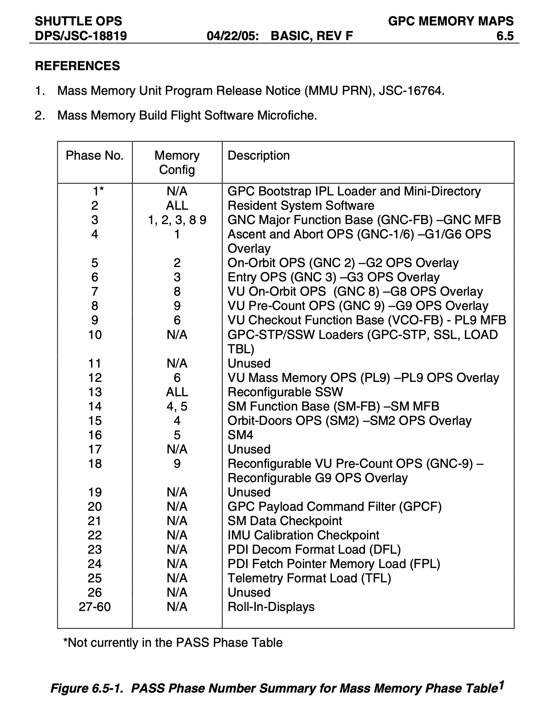

{kind=link}
{kind=link}
This page is available under the Creative Commons No Rights Reserved License
Last modified by Ronald Burkey on 2026-06-23

This page is a tour of the various kinds of files we've received
that comprise the source code of Space Shuttle flight software
like PASS and BFS, the supporting analyses and reports
concerning them, and the hierarchical folder structure in which
that material resides. This tour is not a theory of
operation as to how that software functions, other than
incidentally and very minimally.
Unfortunately, at present, I'm not only treating the original
material as export-restricted by the U.S. International
Traffic in Firearms Regulations (ITAR), but also am obliged
to comply with private agreements about access restrictions that I
had to make to obtain the material in the first place. The
privately-agreed restrictions are much more restrictive than
ITAR: Roughly speaking, if you are a U.S. citizen, residing
in the U.S., are in the process of creating HAL/S or
AP-101S development tools (compiler, assemblers, linkers,
emulators, emulators for peripheral devices, and so on) or
performing other preservation activity for which access to source
material would facilitate the process, and are willing to comply
with my demands for secrecy, then you may qualify for
access. Oh, and you'd better have been funneling the stuff
to me so that I can have formed an opinion of you and the
significance of the work you've been doing vis-à-vis
Space Shuttling in Virtual AGC. Mere interest in the topic,
or speculation as to something you might like to do in the future
if it tickles your fancy, or even work done on the sly without
letting anyone know about it, is not sufficient.
Sorry. (I really am, you know! I'd release it all
freely, if I weren't constrained.)
This means that I'm giving you a "tour" of material to which
very, very few of you have any current current access. Why
am I wasting my own efforts on such a silly activity? Well,
most importantly, it remains my fervent wish that the access
restrictions we're laboring under may be gradually reduced or even
eliminated over time, in which case many more people will be able
to see the material, at which point you'll want to see our
hard-won conclusions about how this material is structured.
But in the meantime, having the explanations available may prove
worthwhile for those lucky(?) few who do have access. And it
doesn't hurt in refreshing my own memory either!
At this writing, all of the material is contained in a single
folder I call PFS/, which stands for Primary Flight Software, but
that's a misnomer since all available PFS, FCOS, BFS, and
BOS source materials are contained in this single folder.
This folder comprises a local-only git repository that
for privacy reasons has no online version (at, say, GitHub).
Therefore, if you have access, you can make local changes to your
copy of PFS/, but cannot directly push any changes back upstream
to me. Methods for approaching this indirectly can be
discussed privately.
Material in PFS/ was received piecemeal, over the course of
several years, before which it was apparently passed around in
private hands, and is reportedly still in the hands of multiple
unknown individuals. I'm not privy to the provenance, or
have knowledge of that prior access, so don't bother to ask me.
In so far as flight-software source code is concerned, it was all
originally encoded in EBCDIC, but when
received by me had at some time previously been re-encoded in
7-bit ASCII, in a
generally-human-readable but not 100% perfect manner. For
example, EBCDIC characters not available in ASCII (¬ ¢) were
sometimes encoded using other ASCII-based 8-bit "code pages" (but
were garbage otherwise), and there were seemingly-random
incursions of non-ASCII characters such as the numeric code
0x00. To the best of my knowledge, all of those
EBCDIC-to-ASCII errors have now been corrected in PFS/.
Additionally, one provision of the
private agreement I made to obtain the material is that the source
code would be anonymized by removal of all personally-identifying
information. The anonymization technique replaces all
programmer names (or initials) with random-appearing strings like
"^n", "\n", "^nn" (padded with blanks), or "\nn"
(padded with blanks). This desire for anonymization is
related to requirements of the U.S. Digital
Millennium Copyright Act (DMCIA), but appears to me to be a
misguided application of the law ... after all, knowing that
someone named (say) H. Potter did something to some file in June
of 1985 is not revealing anything personal (such as an address,
telephone number, a lightning bolt on the forehead, etc.) about
any individual person named H. Potter. Files in some
subdirectories of PFS/ have been anonymized, but not others (as
explained below), and the databases for reversing the
anonymization are contained in PFS/ as well. Therefore, if
the source material ever were to be released more generally,
beyond the core need-to-know group — say, to any U.S. citizen
qualifying under ITAR —, it might be impossible to do it by direct
distribution of PFS/. Rather:
Space
Shuttle flight-software versioning is explained here.
Suffice it to say that for our purposes the software versions are
of the form OImmnn00, where mm is a major version
number such as 30 or 34 and nn is a minor version number
such as 01, 06, or 17. As for the 00 at the end? Who
knows?
Folders containing flight-software source code such as versions
OI340600 or OI301700 are laid out with the following
subdirectories:
D
INCLUDE filename". Such files typically contain STRUCTURE
templates and REPLACE (macro-definition)
statements.COPY pseudo-op, and those
containing macro definitions expected always to be available to
the assembler. A file (MACROFILES.txt) is present in the
folder to specify which of these two categories each source-code
file falls into.COMPOOLs. Perhaps this relates to
how telemetry downlists were stored on tape?I'd note that FCOS seems to be written entirely in assembly
language, with filenames of the form FCxxxxxx.asm, but also
that there are so very many source-code files, you should be
cautious of any blanket categorizations like this prior to
successfully building and running the software they concern.

PASS executable code is built from the source-code files
comprising it, but not all of the executable code is loaded into
any given GPC (of which there are 5 in the Shuttle) at any
time. Rather, only those portions of the executable code
needed for the operational role currently being served by the GPC
are loaded into it. Those executable-code sets consist of 9
distinct predefined memory configurations, though not all
of the predefined configurations are applicable to all of the
Shuttle flights, so for some flights, some of the predefined
memory configurations may be unavailable. In general, the
memory configurations can be related to the applicable "major
functions" — Guidance/Navigation/Control (GNC), System Maintenance
(SM), or Payload (PL) —, and to the mission phases, also known as
Operational Sequences (OPS).
Aside: The use of the PL acronym is curious, since the PL major mode turns out to have little or nothing to do with the payload. As late as 2006, the Crew Software Interface document described it as: "Payloads (PL): This major function contains utility software that is used only in the event of a malfunction. Future flights may include some payload support software in PL; however, PL is generally unsupported. An unsupported major function is defined as any major function that, at a given time, is not being processed by any of the GPCs."
This is neatly summed up graphically in the figure to the right,
and can be summarized in words as:
For example, for flight STS-134, the memory configurations SSW,
G9, G16, G2, G8, G3, S2, and P9 were available, but S4 was not, I
believe, and any of them other than S4 could in principle be
downloaded from the Mass Memory Unit into any of the 5 GPC's at
any time.
HALSTAT was a general-purpose tool to report on the characteristics of an already-compiled HAL/S program, such as the PASS software itself. HALSTAT's speciality was giving a global cross-reference of all HAL/S symbols (variables, compilation units, functions, procedures, etc.), together with top-level memory maps.
Which leads me to the file HALSTAT.ASC. This is a report produced by the HALSTAT program, for PASS software OI340100 ... maybe. The report indicates that both STS-134, which would be OI340700, and "OI034/R1", which could be OI340100. The answer remains TBD at this point, but can probably be discovered if enough diligence is applied to it.Aside: Recall that the HAL/S compiler came in two flavors, one of which was used for compiling PASS, and one of which was used for compiling BFS) HALSTAT is specific to compilations performed by the PASS version of the HAL/S compiler. For compilations by the BFS version of the compiler, there was a different tool, from which no remnants are currently known to have survived. As for HALSTAT itself, we actually have original XPL/I source code for it, though for technical and pragmatic reasons no attempt has yet been made at this writing to actually build a modern executable for it.
The "technical reason" is that some auxiliary source files seem to be missing — STND, CONV, TRACE, EXPAND, VMEM1X, VMEM2X, VMEM3X, and VMEM4X — and that it seems to require SDFPKG (an IBM BAL program not yet ported into the modern world), while the "pragmatic reason" is that the HALSTAT uses as input some files that are produced by HAL/S-compiler passes that are not yet implemented.
COMPOOLs)
used by each source-code file.The contents of these directories are believed to provide perhaps
10% of the source code for the Backup Flight Software (BFS) and
Backup Operating System (BOS) associated with release OI-34.1, for the
reasons described here, and to have been compiled with
compiler HAL/S-BFC 16.1. Since the version of the HAL/S
compiler available to us is 17.0, there should be backward
compatibility between the code and the compiler.
Aside: It is unclear, though, how much of BFS source code is available versus how much of BOS source code is available. One of the source-code files (in BFS.SRC/SSSRC/) is actually called BOS.asm, and all of BOS.asm's direct dependencies (ENTRYS.asm, EQU.asm, and so on) are actually available (in BFS.SRC/MLIB80/). ENTRYS.asm does list many
EXTRNsymbols, but at least upon superficial examination these appear to be variables rather than subroutines, and the assembler assigns actual addresses to these as if they were non-EXTRN. In summary, it remains possible at this writing that the entirety of BOS source code may indeed be present. This is something that should be investigated.
As far as the specific subfolders are concerned:
PASS version OI30.17 source code, including both the Flight Computer Operating System (FCOS) and the Primary Flight Software (PFS).
As might be suspected from the names, "OI301700 as received"/
contains the files "just as I received them", but that's not quite
true. A number of adjustments have in fact been made to
them. Those adjustments are described well in the file
README.md in that directory, so I'd recommend reading it.
I'd merely reiterate (from that README) that these files are not
source code as such, but rather are similar to the reports
generated by pass 1 of the HAL/S compiler (for HAL/S files) or by
the AP-101S assembler (for AP-101S assembly-language files).
As a result, these files contain most of the source code,
but cannot themselves be directly compiled or
assembled. When I say they are "similar" to compiler
reports, I mean just that: They are formatted similarly but
not identically to compiler reports, but do not contain the full
complement of information found in compiler reports, such as the
list of compiler options used, date of compilation, compiler
version used, symbol table, etc.
Note: the files in "OI301700 as received"/ have not been anonymized, and therefore will not be candidates for distribution as-is (if that ever is allowed) to the non-core group.
Therefore, in all cases, the source code had to be extracted via
software from the files in "OI301700 as received"/. This
extraction was performed by the Python script
PFS/unprint.py. Extracted files — anonymized and with
Virtual AGC file headers — are what can be found in the folder
OI301700/.
Some facts to take note of:
D INCLUDE file
or D INCLUDE TEMPLATE file to import code
from other HAL/S files. By default, it then lists the code
from those other files (which themselves are usually not
compiled separately) in the output report, from which the the
extraction software can extract it. But sometimes,
the compiler directives I just mentioned are used with an option
called NOLIST. If that option is present,
then the imported code will not be shown in the
report. If the imported file is never itself compiled, and
if all of the compiler directives used to import it into another
HAL/S file have used NOLIST, then we are left with
no information about the file's contents. It will often
happen that even if that's the case, there will be a similar or
identical file (of the same name) in OI340600 that we can use
instead. Are there still source files for OI301700 missing
after all of those options have been exhausted? At this
writing, I don't yet know.REPLACE statement
are by default not visibly expanded in the output
reports. However, HAL/S has an an optional way to do so,
by enclosing the name of the macro within paired characters ¢
(or conventionally, a backtick ` in our modern port of the HAL/S
compiler). For example, if you had a macro called MYMACRO,
and invoked it as just MYMACRO, then the compiler
would expand it just fine, but all that would show up in the
output report is just MYMACRO. Whereas if it
were instead invoked as ¢MYMACRO¢ (or
`MYMACRO`) then the full expanded form of the macro
would show up in the output report. Functionally, of
course, this is fine and will produce the same result after
compilation. But it is one more way in which the extracted
source code will differ from the original source code.PASS version OI34.06 source code, including both the Flight
Computer Operating System (FCOS) and the Primary Flight Software
(PFS).
As might be suspected from the names, "OI340600 as received"/
contains the files "just as I received them".
Note: the files in "OI340600 as received"/ have not been anonymized, and therefore will not be candidates for distribution as-is (if that ever is allowed) to the non-core group.
The contents of OI340600/ differ in that the files have been
anonymized and Virtual AGC file-headers added to them.
Slight changes in the form of conditional compilation (via the
CARDTYPE compiler option) will have been made only in
OI340600/
The HALSTAT
report-generation program was described earlier. That
program had a successor program, MAFGEN. The two
programs had different emphases, in that HALSTAT tried to
provide a good top-level horizontal view of how the PASS software
fit together, in all of its memory configurations; whereas MAFGEN
tried to provide a very-detailed vertical deep dive down the
nitty-gritty level.
In this directory, we find reports generated by MAFGEN
for PASS version OI340700. There is one file for each memory
configuration, having the names DASS_G16.ASC, DASS_G2.ASC, ...,
DASS_S2.ASC, DASS_P9.ASC, DASS_SSW_(PostIPL).ASC. (IPL
stands for Initial Program Load). They are disassemblies —
i.e., conversions of AP-101S machine code into a semblance of
AP-101S assembly language — of memory images extracted from the
GPC's, with much supporting detail besides.
From my perspective, though you may think of other novel things
to do with them, these files have two principal uses:
The extraction was performed by my Python script
PFS/unMAFGEN2.py.
The combined effect of these extractions — eventually,
when everything is working right — is hopefully that we'll be able
(say) to compile a HAL/S file from OI340600, link the object file
using the CSECT-address guidance from the index files, and then
byte-by-byte compare the resulting file dumped OI340700 memory
images. Indeed, we can do this right now, but not 100%.
Aside: As just described, we'd be comparing OI340600 to OI340700. I have been assured that the core code for the various OI34.x versions was identical, and that the difference was merely the application after compilation/assembly/linking of "patches" that varied on a flight-by-flight basis. I know that this is not literally true, though, as I have accidentally found a source-code file in OI340600 that differs from the disassembly of OI340700 memory images. Nevertheless, I expect it mostly to be true, and therefore for the comparison process to mostly be a valid one.
Aside from the PASS (or BFS) source code itself, successfully
reproducing a PASS build requires additional information.
For example:
Getting any of these wrong may result in a build that behaves
correctly when you execute the code, but which differs on a
byte-for-byte level from the original build (as extracted from MAFGEN reports), and
thus cannot be compared to it for validation purposes.
Regarding the latter two items, it is believed that the files in
the folder PFS/OI340600/CON80/*.con provide this information, at
least for PASS OI34.06. These are mostly files of what are
called "linkage-editor control statements". This is a kind
of language used in IBM System/360 and beyond for passing commands
to linkers, and you can read about it in IBM linkage-editor
documents ... which we don't provide in Virtual AGC libraries due
to the fact that these documents are still legally
copyright-protected. With that said, at this writing you
can find those documents on non-Virtual-AGC sites, such as here
at bitsavers.org.

ADDRMAX
BANK CHANGE CLEAR INCLUDE INSERT LIBRARY MAP NOCALLER OVERLAY PHASE REMOTE RESERVE SET STACK
Fortunately, the most-commonly-found commands used are the ones
in bold. And some of the unbolded ones do make some
sense. Still, as far as the documentation is concerned,
we're left with 10 commands in these files whose use is completely
unknown. Hopefully over time, they can be documented
here. For now, though, they're TBD.
However, let's look past that at the moment and consider the
linker-control files themselves. The place to start looking
would appear to be the files called PHASE01.con through
PHASE22.con. It's not entirely clear why the term "PHASE" is
used for them, but what they are is instructions for building
various useful software sets. HALSTAT also seems to apply this same
"phase" terminology. For example, it tells us that the VJ1_LS_RESPONSE
PROGRAM (the self-described "G1 LAUNCH SEQUENCE
RESPONSE PROCESSOR") is built in PHASE04.con, which makes sense if
PHASE04.con happens to have something to do with memory
configuration G16.
And guess what? To the right, you'll see a table describing
those phases, plus a few more besides. I would read this
table as saying, for example, that to get memory configuration G16
(ascent/abort), you'd build PHASE03.con to get a base, and you'd
build PHASE04.con to get an overlay of the specific application
code you needed to add to the base.
I won't go through a fully-worked-out example here, because I
haven't taken the time to move up the learning curve on this and
am lazy, but consider the file PHASE01.con, which should build the
boot loader:
*@ PCR=57888;(OI06.02)-DEL STPSTUB- PHASE01 000100AI
*************************************************************** PHASE01 000200AI
** *** THIS PHASE CONTAINS THE IPL BOOTSTRAP *** PHASE01 000300AI
** *** LOADER AND A DUMMY (BUT ACTUAL CODE) *** PHASE01 000400AI
** *** COPY OF THE SSL SO IT WILL STILL MAP *** PHASE01 000500AI
** *** INTO PHASE TWO *** PHASE01 000600AI
*************************************************************** PHASE01 000700AI
NOCALLER DO NOT ALLOW AUTO-CALL PHASE01 000800AI
******** IPL ONLY PHASE01 000900AI
INCLUDE SYSLIBL1(FCMBOOT,LOADTBL) PHASE01 001000AI
00000 OVERLAY BOOT ------ ORIGIN OF IPL BOOTSTRAP LOADER PHASE01 001100AI
INSERT FCMBOOT *IPL BOOTSTRAP LOADER PHASE01 001200AI
******** PHASE01 001300AI
06FBC OVERLAY SSL -------- DUMMY ( NOT EXECUTED ) COPY PHASE01 001400AI
INCLUDE CONCARDS(SSL) PHASE01 001500AI
07C00 OVERLAY BRSSLPT SSL PHASE TABLE PHASE01 001600AI
INSERT FCMSSLPT SSL PHASE TABLE PHASE01 001700AI
******** TO MAP INTO PHASE 2. THE PHASE01 001800AI
******** REAL SSL IS IN PHASE 26 PHASE01 001900AI
****************************************************************PHASE01 002000AI
* *** END OF PHASE 1 DEFINITION *** PHASE01 002100AI
****************************************************************PHASE01 002200AI
* END PHASE01 PHASE01 002300AI
Makes sense, but is it correct? HALSTAT.ASC shows us the
following:
Looks mighty similar to me! I'd note finally that you won't find this information in the MAFGEN disassemblies, because the boot loader isn't present in any of the 9 OPS memory configurations; it does its job and disappears before any of the OPS configurations are loaded.0 M E M O R Y M A P --- BOOT
FCMBOOT 000000 FCMCKSUM 007398 FCMINBCE 007362 FCMINMSC 007374 FCMINSSL 006FBC FCMSSLPT 007C00 LOADTBLE 007378
1H A L S T A T H A L S T A T 16 DEC 09 85013 AM PAGE2402
0 M E M O R Y M A P --- BOOT
000000-000747 FCMBOOT **** 000748( 1864) N O N H A L
000748-006FBB INTER_CSECT GAP # 1 (26740 HW)
006FBC-007361 FCMINSSL **** 0003A6( 934) N O N H A L
007362-007373 FCMINBCE **** 000012( 18) N O N H A L
007374-007377 FCMINMSC **** 000004( 4) N O N H A L
007378-007397 LOADTBLE **** 000020( 32) N O N H A L
007398-00739B FCMCKSUM **** 000004( 4) N O N H A L
00739C-007BFF INTER_CSECT GAP # 2 (2148 HW) LAST GAP IS AT ADDR 000748
007C00-007EFF FCMSSLPT **** 000300( 768) N O N H A L
1H A L S T A T H A L S T A T 16 DEC 09 85013 AM PAGE2403
0 M E M O R Y M A P --- BOOT
M A P S U M M A R Y
CSECT CATEGORY # TOTAL SIZE
NON-HAL 7 3624 HALFWORDS
0
TOTAL HAL CODE 0 HALFWORDS 0.00%
TOTAL HAL DATA 0 HALFWORDS 0.00% (INCLUDING #Z,#E,#X)
TOTAL LIBRARY CODE 0 HALFWORDS 0.00%
TOTAL LIBRARY DATA 0 HALFWORDS 0.00% (INCLUDING #Q)
TOTAL STACK SPACE 0 HALFWORDS 0.00%
TOTAL HAL 0 HALFWORDS 0.00%
TOTAL NON-HAL CODE/DATA 3624 HALFWORDS 100.00% (INCLUDING BCE,MSC & PATCH AREAS)
GRAND TOTAL 3624 HALFWORDS
2 INTER-CSECT GAPS FOR A TOTAL SIZE OF 28888 HALFWORDS
LAST GAP OCCURRED AT ADDRESS 00739C
TBD